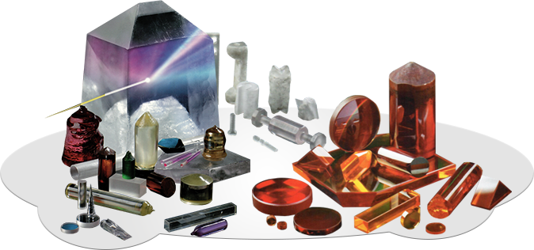

- ДОСЛIДЖЕННЯ
- РОЗРОБКА
- ВПРОВАДЖЕННЯ


Інститут монокристалів НАН України має більш ніж піввіковий досвід:
- в матеріалознавстві кристалічних матеріалів для оптики, лазерної техніки, електроніки та інших застосувань;
- в фундаментальних дослідженнях структури, фізичних і фізико-хімічних властивостей кристалічних матеріалів;
- в розробках і удосконаленні технологій отримання кристалів і виробів із них.
В Інстітуті розробляються технології отримання і практичного використання лазерних кристалів тугоплавких оксидів, сполук А2В6 и їх твердих розчинів, нелінійно-оптичних органічних кристалів, лазерної и оптичної оксидної кераміки і інших матеріалів у відповідності до профілю своєї діяльності.